Nitrogen pollution from livestock can be reduced more efficiently considering spatial optimization
Publications
Browse all papersNature Food · 2026
Can composting turn food waste into a carbon sink?
Drawing on composting trials around the world, the team used machine learning to identify management choices that limit nitrogen and carbon losses while recycling nutrients.
Read the journal article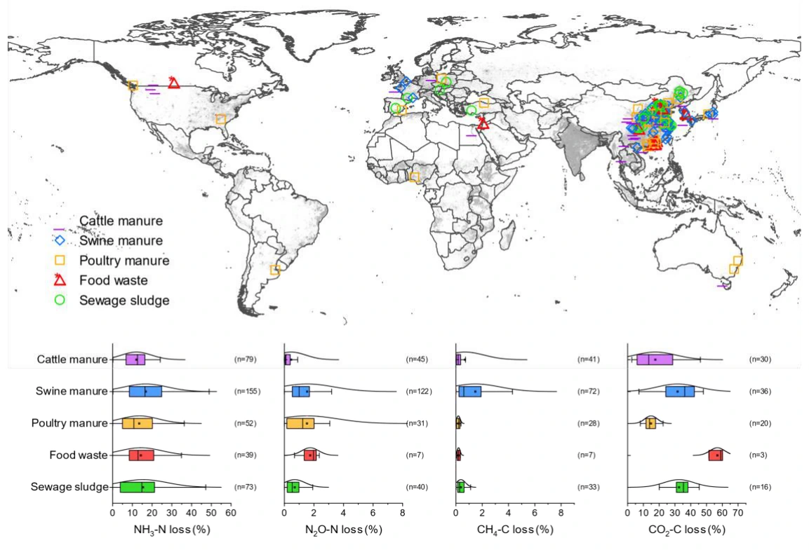
Research interests
- Artificial Intelligence
- AI4Science
- Knowledge Representation and Reasoning
- Deep Learning
- Natural Language Processing
- Game Playing
All publications 56
No matching publications.
Forthcoming
2027
MARMo: An Evidence-Guided and Memory-Augmented Multi-Agent Repair Framework for Accurate Text-to-NoSQL Parsing
Bridging the Gap: Enabling Natural Language Queries for NoSQL Databases through Text-to-NoSQL Translation
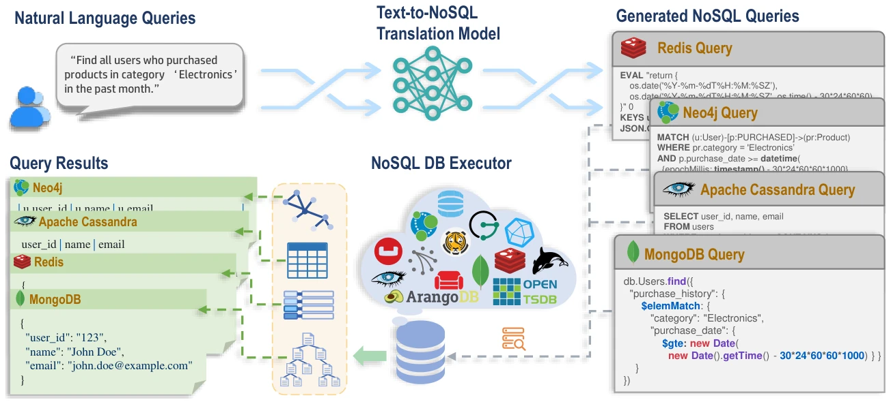
2026
Towards Robust and Interactive Text-to-Visualization Translation: Enhancing Model Robustness and Mitigating Ambiguity in Natural Language Queries
Machine Learning-Optimized Composting Strategies Can Enhance Nutrient Recycling and Transform Food System Waste into a Net Carbon Sink
The Dynamic Competition of Chinese Synonyms Over a Century
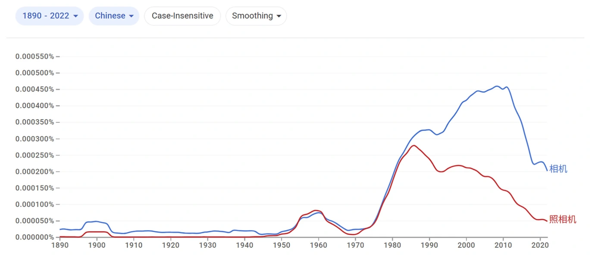
TYLER: Typed Latent Reasoning for Language Models - When to Think, What to Compute, and How Much to Allocate
Multi-MALLS: A Multilingual Benchmark for Natural Language to First-Order Logic Translation
TEFD: A Benchmark for Natural Language to Flux Query Generation in Time-Series Databases
SD-DVQ: Semantic-Driven Data Visualization Query Generation from Speech Queries
Dual-Channel Semantic-Enhanced Combinatorial Medication Recommendation via Knowledge Distillation
Spherical Physics-informed Neural Operator with Multi-scale Coupling for Meteorological Downscaling
MTO: A Multi-turn Conversational Text-to-OverpassQL Dataset for Enhanced OpenStreetMap Query Generation
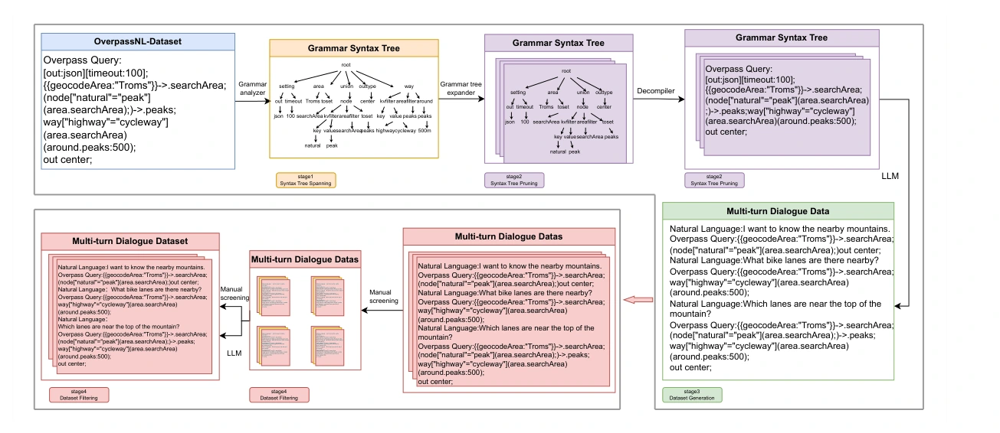
2025
Speech-to-Visualization: Toward End-to-End Speech-Driven Data Visualization Generation from Natural Language Questions
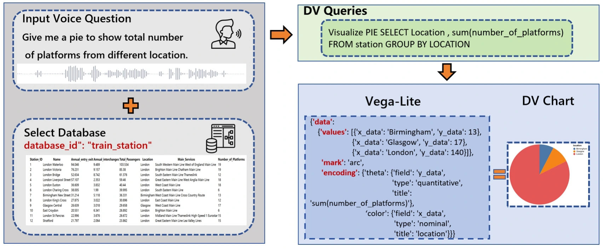
VoiceVisSystem: End-to-End Voice-driven Data Visualization Generation from Natural Language Questions
Deduction with Induction: Combining Knowledge Discovery and Reasoning for Interpretable Deep Reinforcement Learning

Learning Dynamical Coupled Operator For High-dimensional Black-box Partial Differential Equations
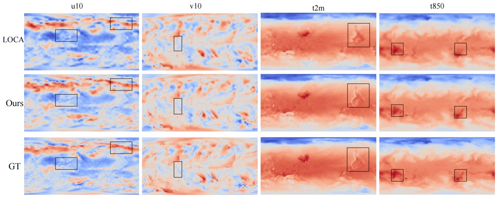
SSPNet: Leveraging Robust Medication Recommendation with History and Knowledge
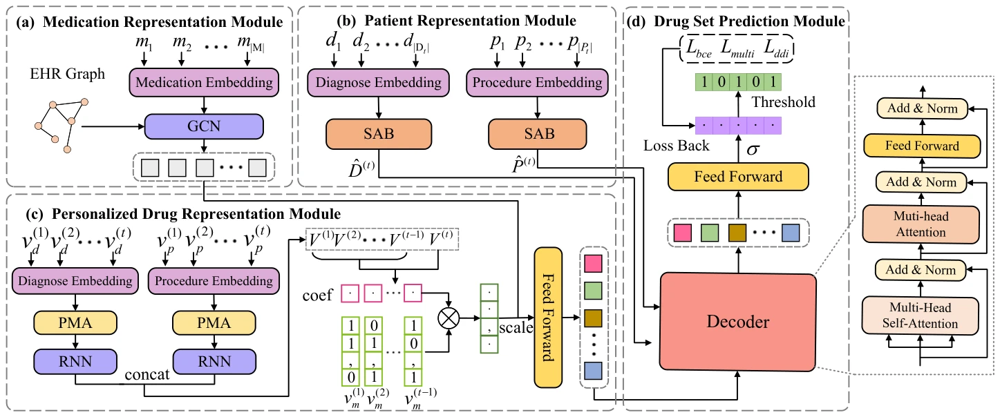
HealthLens: A Natural Language Querying System for Interactive Visualization of Electronic Health Records
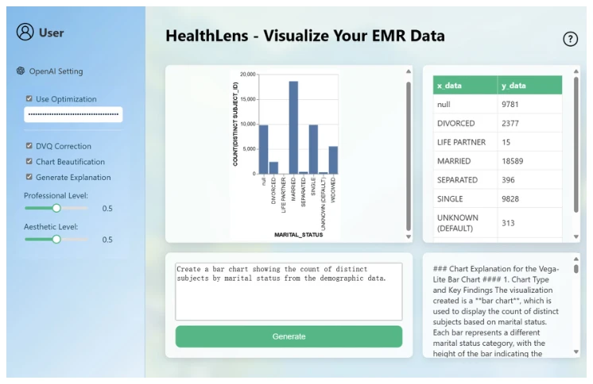
FeVisQA: Free-form Question Answering over Data Visualizations
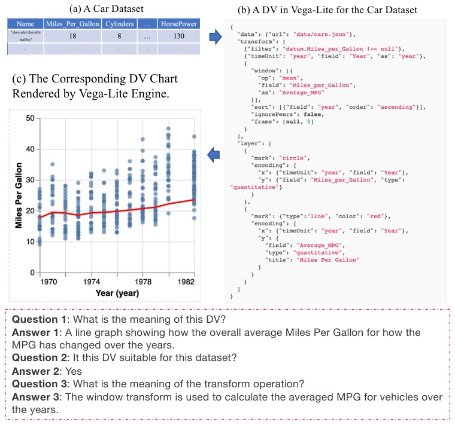
Towards Robustness of Text-to-Visualization Translation against Lexical and Phrasal Variability
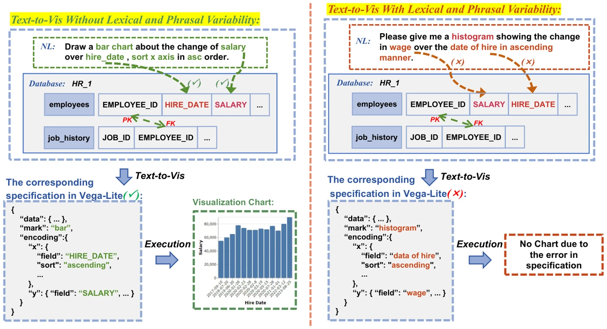
HRLMS: A Data-driven Hierarchical Reinforcement Learning System for Interactive Rule Intervention and Visualization
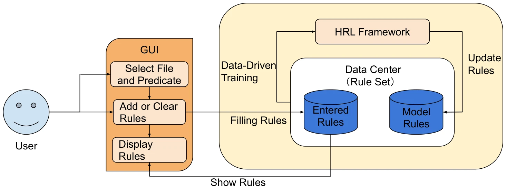
Climate Downscaling Using Neural Operator: Spatiotemporal Multimodal Fusion Operator with State-Query Coupled Kernel
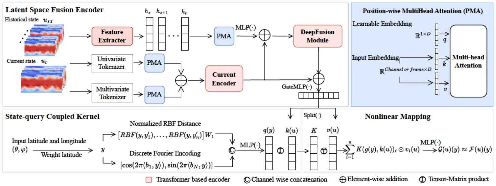
Efficient Data Labeling by Hierarchical Crowdsourcing with Large Language Models
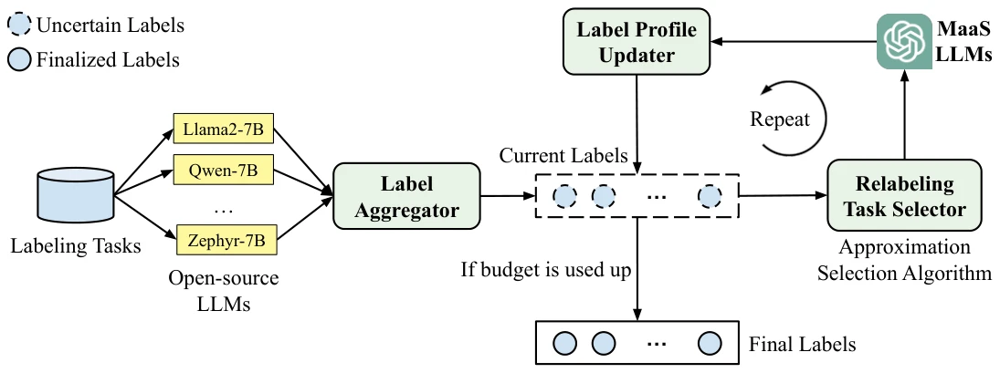
Learning Road Network Index Structure for Efficient Map Matching
Prompt-Based Relation Extraction By Reasoning with Contextual Knowledge
Dual Learning between Molecules and Natural Language
Natural Language to Overpass Query: A Multi-Step Approach Using Task Decomposition and Key-Value Correction
2024
Enhancing crop production in the Haihe Basin while addressing challenges related to water quantity and quality
COSIS: An AI-Enabled Digital Transformation Framework Integrating Large Language Models and Key Performance Indicators
Demonstration of FeVisQA: Free-Form Question Answering over Data Visualization
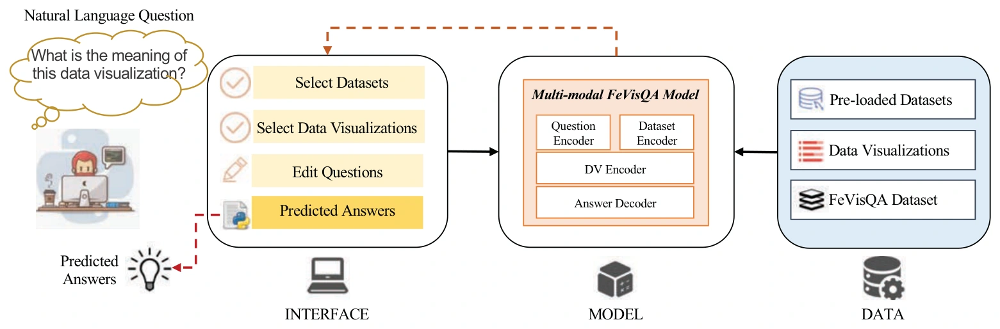
Automatic SQL Query Generation from Code Switched Natural Language Questions on Electronic Medical Records
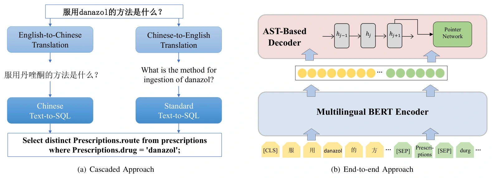
Recognizing Textual Entailment by Hierarchical Crowdsourcing with Diverse Labor Costs
2023
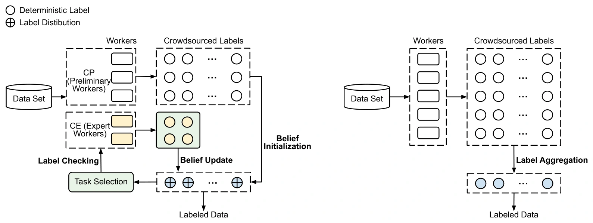
Query-aware Quantization for Maximum Inner Product Search
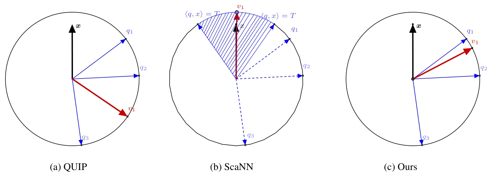
Integrating Automated Knowledge Extraction with Large Language Models for Explainable Medical Decision-Making
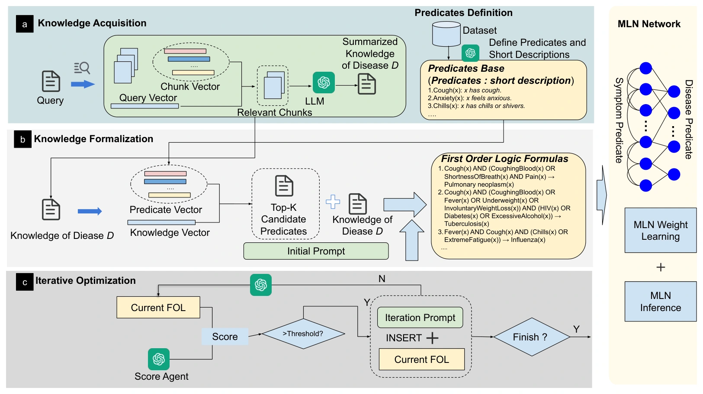
Where To: Crowd-Aided Path Selection by Selective Bayesian Network

2022

Cleaning Uncertain Data with Crowdsourcing - a General Model with Diverse Accuracy Rates
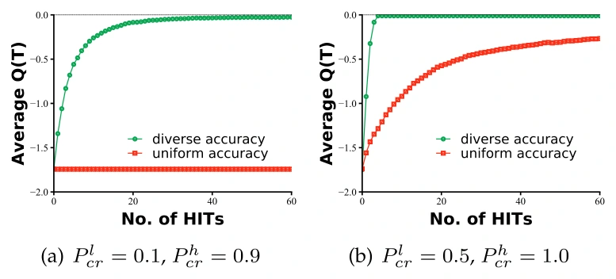
Explainable Pulmonary Disease Diagnosis with Prompt-Based Knowledge Extraction
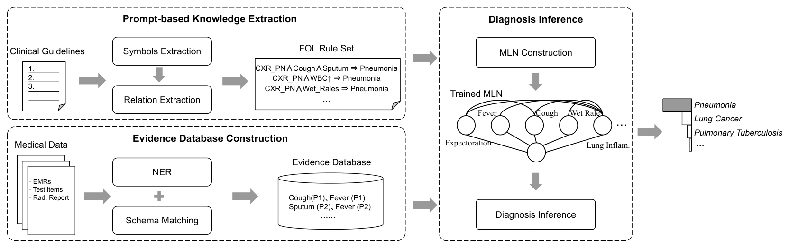
IRLM: Inductive Representation Learning Model for Personalized POI Recommendation
显式知识推理和深度强化学习结合的动态决策
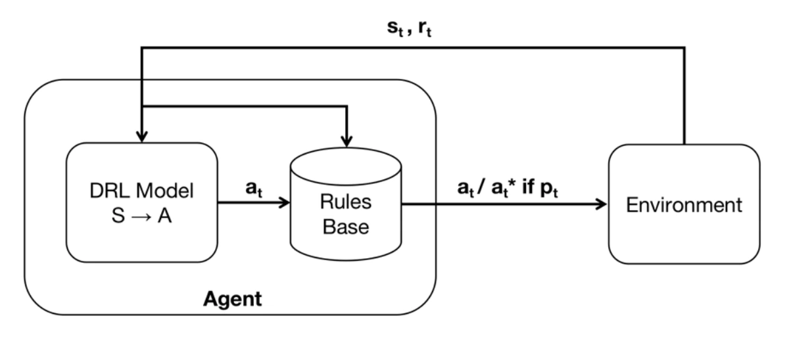
MMLN: Leveraging Domain Knowledge for Multimodal Diagnosis
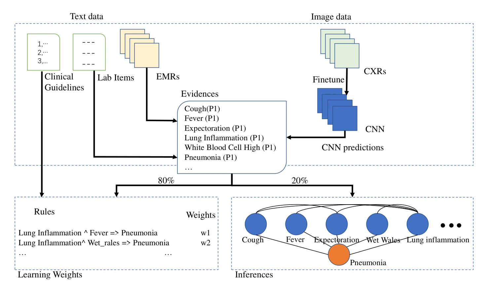
Knowledge-Assisted DRL for Energy Harvesting Based Multi-Access Wireless Communications
Knowledge-Enhanced Learning for KG Embedding
Improving Confidence of Uncertain Knowledge Graphs by Crowdsourcing with Limited Budget
2021
Burstiness-Aware Web Search Analysis on Different Levels of Evidences
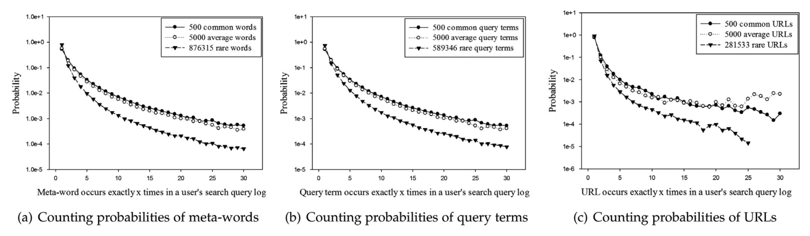
Exploiting Multi-source Data for Adversarial Driving Style Representation Learning
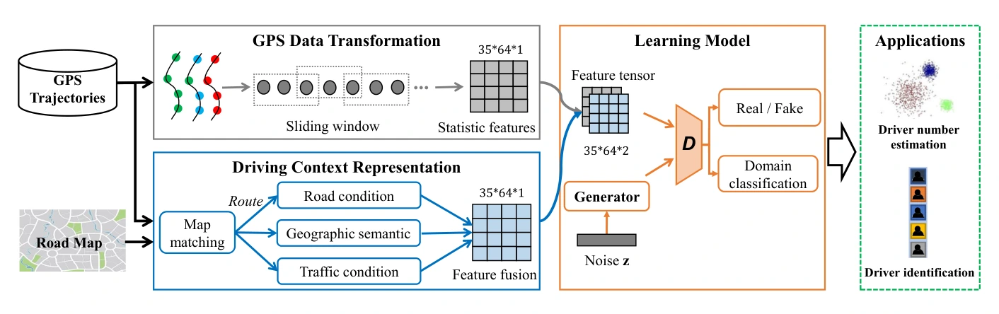
Macau's Vocabulary Growth in the Recent Ten Year
2020
Embedding High-Level Knowledge into DQNs to Learn Faster and More Safely
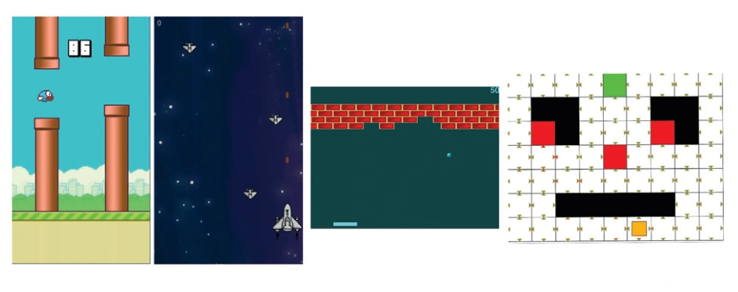
2019
How Well Do Machines Perform on IQ tests: a Comparison Study on a Large-Scale Dataset
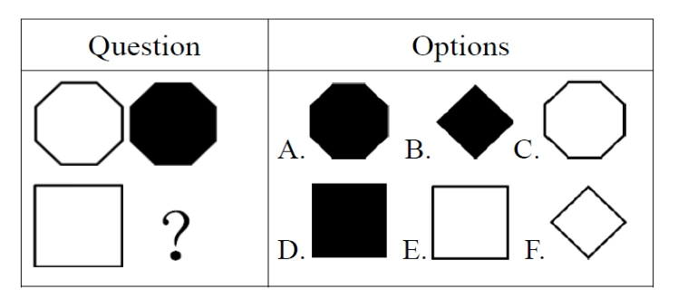
2018
Dual-enhanced Word Representations Based on Knowledge Base
2017
An intent solver for enabling intent-based SDN
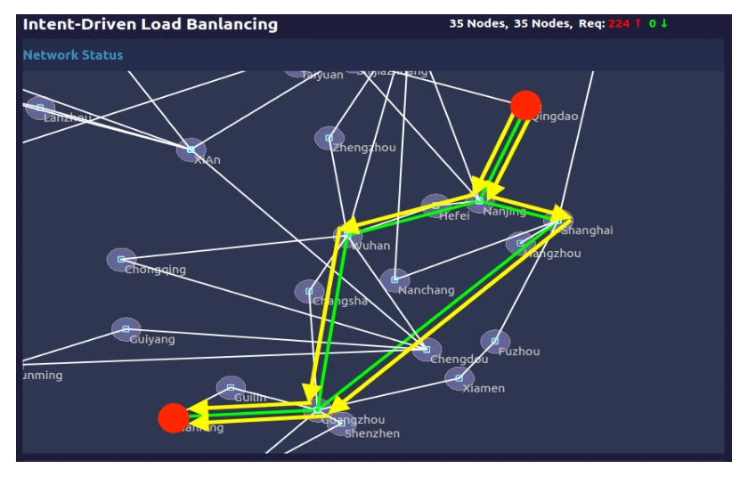
Characterizing causal action theories and their implementations in answer set programming
2016
Mapping Action Language BC to Logic Programs: A Characterization by Postulates
2015
Characterizing Causal Action Theories and Their Implementations in Answer Set Programming: Action Languages B, C, and Beyond
Do not go gentle into that good night. Rage, rage against the dying of the light. —Dylan Thomas
Invited Talks
Knowledge Representation and Reasoning for Economic Brain of Avatars
2022-02 · Shenzhen
Knowledge Representation and Reasoning for Deep Learning in NLP
2021-12 · Macau University
Natural language processing: tasks, models and applications
2021-11 · BNU Zhuhai
Leveraging Human Intelligence in Machine Learning for NLP
2020-12 · Macau University